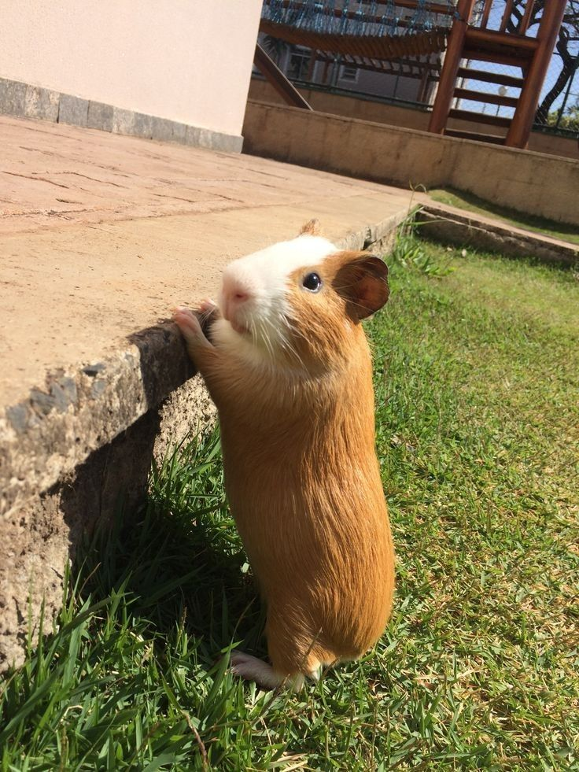

Поворот изображения
Поворот изображения используется для изменения ориентации изображения на заданный угол.
В OpenCV есть функция cv2.getRotationMatrix2D(), которая генерирует матрицу поворота, и функция cv2.warpAffine(), которая применяет эту матрицу к изображению.
Основы поворота изображения
Чтобы повернуть изображение, нужно:
- Создать матрицу поворота.
- Применить эту матрицу к изображению с использованием аффинного преобразования.
matrix = cv2.getRotationMatrix2D(center, angle, scale)- center — Центр поворота (координаты точки), вокруг которой происходит поворот. Это обычно центр изображения.
- angle — Угол поворота (в градусах). Положительное значение поворачивает изображение по часовой стрелке, а отрицательное — против.
- scale — Масштаб, который определяет, будет ли изображение увеличено или уменьшено после поворота.
Пример кода
image = cv2.imread('example4.jpg')
show_image(image, "Опа чё могёт")
height, width = image.shape[:2]
center = (width // 2, height // 2)
angle = 45
scale = 1
rotation_matrix = cv2.getRotationMatrix2D(center, angle, scale)
rotated_image = cv2.warpAffine(image, rotation_matrix, (width, height))
show_image(rotated_image, "Поехала")
При повороте изображения его края могут быть пустыми, поскольку изображение может выйти за пределы оригинального размера.
В примере выше используем размеры исходного изображения (width, height), что может привести к тому, что часть изображения будет обрезана. Можно изменить размеры выходного изображения в зависимости от нужд, чтобы избежать потерь данных.
Попробуем это сделать:
import numpy as np
# Получение размеров изображения
height, width = image.shape[:2]
# Центр изображения
center = (width // 2, height // 2)
# Угол поворота
angle = 45 # Поворот на 45 градусов
# Масштаб (1 - без изменения масштаба)
scale = 1
# Получение матрицы поворота
rotation_matrix = cv2.getRotationMatrix2D(center, angle, scale)
# Сначала вычисляем новую ширину и высоту
cos_angle = np.abs(rotation_matrix[0, 0])
sin_angle = np.abs(rotation_matrix[0, 1])
# Новые размеры
new_width = int(height * sin_angle + width * cos_angle)
new_height = int(height * cos_angle + width * sin_angle)
# Обновляем матрицу поворота для учета новых размеров
rotation_matrix[0, 2] += (new_width - width) / 2
rotation_matrix[1, 2] += (new_height - height) / 2
# Применяем поворот с новыми размерами
rotated_image = cv2.warpAffine(image, rotation_matrix, (new_width, new_height))
show_image(rotated_image, "Емае как некрасиво это всё... но зато сохранили фулл изображение")
cv2.imwrite("emae.jpg", rotated_image)
Сдвиг изображения
Для выполнения сдвига изображения необходимо:
- Создать матрицу трансляции.
- Применить эту матрицу к изображению с помощью функции
cv2.warpAffine().
matrix = np.float32([[1,
Обрезка изображений в OpenCV
Обрезка изображений в OpenCV
Формат изображения
В OpenCV изображения представлены как многомерные массивы (NumPy) с размерностью (height, width, channels). Это позволяет легко обращаться к пикселям для выполнения операций, таких как обрезка.
Индексация для обрезки
Чтобы вырезать часть изображения, можно использовать индексацию:
image[y1:y2, x1:x2]
где:
y1 и y2 — координаты по оси Yx1 и x2 — координаты по оси X
Пример обрезки изображения
import cv2
# Загрузка изображения
image = cv2.imread('example2.jpg')
# Определение областей обрезки
height, width, _ = image.shape
y1, y2 = int(height / 4), int(height / 2)
x1, x2 = int(width / 4), int(width / 2)
# Обрезка
cropped_image = image[y1:y2, x1:x2]

Целая
Носик
Обрезка с учётом пропорций
Чтобы сохранить пропорции (например, 4:3), нужно рассчитать координаты так, чтобы они соответствовали нужному соотношению сторон:
aspect_ratio = 4 / 3
# Новые размеры
new_width = width
new_height = int(new_width / aspect_ratio)
if new_height > height:
new_height = height
0, tx], [0, 1, ty]])
- tx — Сдвиг по оси X.
- ty — Сдвиг по оси Y.
Пример кода
height, width = image.shape[:2]
tx = 420
ty = -150
translation_matrix = np.float32([[1, 0, tx], [0, 1, ty]])
shifted_image = cv2.warpAffine(image, translation_matrix, (width, height))
show_image(shifted_image, "Мяу")Часто требуется одновременно выполнять несколько геометрических преобразований, таких как и поворот, и сдвиг. Для этого можно комбинировать матрицы преобразования.
Для этого создаем матрицы поворота и сдвига, а затем перемножаем их.
Пример:
# Центр изображения
center = (width // 2, height // 2)
# Угол поворота и масштаб
angle = 45
scale = 1
# Матрица поворота
rotation_matrix = cv2.getRotationMatrix2D(center, angle, scale)
# Определение сдвига
tx = 200
ty = -250
# Матрица трансляции
translation_matrix = np.float32([[1, 0, tx], [0, 1, ty]])
# Комбинированная матрица преобразования
combined_matrix = np.dot(translation_matrix, np.vstack([rotation_matrix, [0, 0, 1]]))
# Применение комбинированного преобразования
transformed_image = cv2.warpAffine(image, combined_matrix[:2], (width, height))
# Отображение результата
show_image(transformed_image, "Ну вообще...")
cv2.imwrite("shifted_image1.jpg", transformed_image)
Зеркалирование изображений
Зеркалирование изображения — это операция, при которой изображение отражается относительно одной из осей (горизонтальной, вертикальной или обеих осей).
- Функция:
cv2.flip(image, flipCode) - Параметры:
flipCode = 0: Вертикальное зеркалирование.flipCode = 1: Горизонтальное зеркалирование.flipCode = -1: Зеркалирование относительно обеих осей.
image = cv2.imread('example5.jpg')
show_image(image, "Обычная")
flipped_horizontally = cv2.flip(image, 1)
flipped_vertically = cv2.flip(image, 0)
flipped_both = cv2.flip(image, -1)
show_image(flipped_horizontally, "Зеркальная")
show_image(flipped_vertically, "Перевёртыш")
show_image(flipped_both, "Зеркальный перевёртыш")